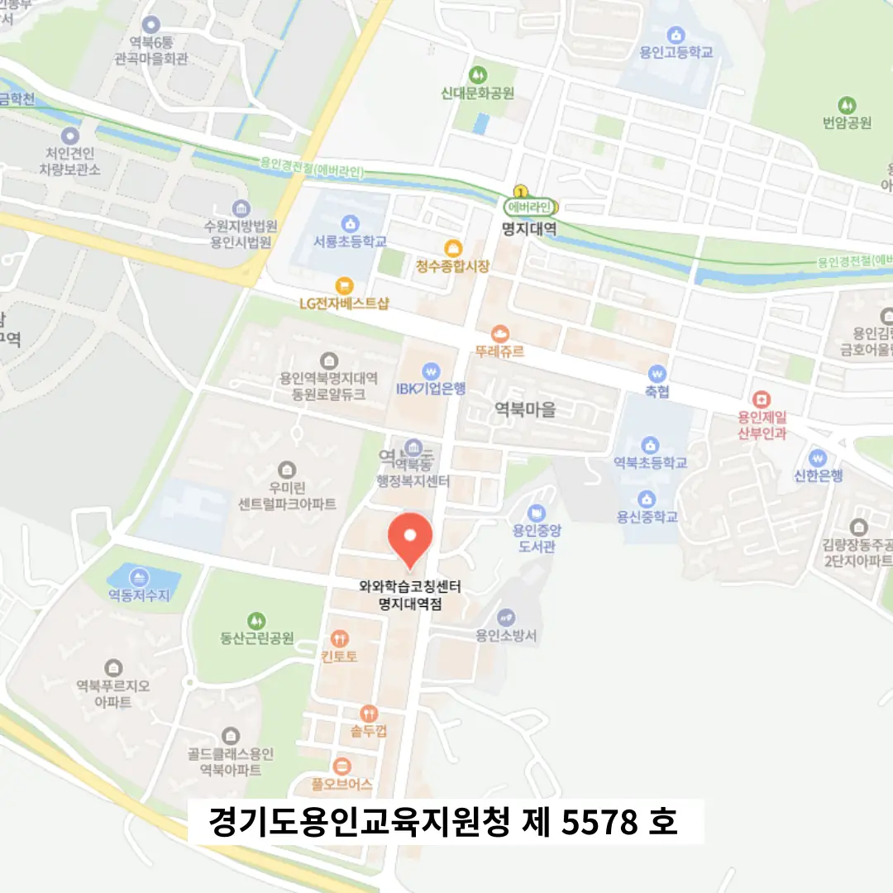

역북동 수능대비학원
역북동 수능대비학원
매일 학습이 끝난 후, 하루 동안 세웠던 계획과 실제로 수행한 내용을 비교하며 작은 차이를 점검하는 습관을 들이게 한다. 학생이 자신의 학습 과정을 관리하고, 개선하는 데에 도움이 될 수 있습니다. 역북동 수능대비학원은 이 과정을 거치면 단순히 ‘틀렸다’는 결과에 머무는 것이 아니라, ‘어떤 상황에서, 어떤 이유로, 왜 틀렸는가’까지 따라가며 학습의 자각 수준을 높일 수 있으며, 이러한 자각이 곧 자기주도 학습의 밑거름이 된다. 오답 내용을 바탕으로 짧은 스피치를 준비해 외우는 활동은 단순 복습을 넘어 자신의 사고를 언어화하고 전달하는 훈련이 되며, 이는 입시뿐 아니라 미래 전반의 커뮤니케이션 능력까지 키운다. 이 노트는 단순 단어장이 아닌, 표현을 문장 구조 안에서 활용한 예문, 자신이 만든 상황 대화, 심지어 그림까지 첨부된 창의적 기록물이 되었고, 이를 매주 토요일 오전 리뷰 시간에 직접 소리 내어 낭독함으로써 청각, 시각, 구어의 삼중 입력 경로를 통합했습니다. 이를 통해 빠르게 진동하는 주의력이 지속적으로 집중 상태로 이어집니다. 역북동 수능대비학원은 오답 노트를 작성하고 일정표에 따라 반복적으로 재검토하는 행동은 학습자가 자신의 오류 패턴을 시각화하고, 그에 대한 교정 전략을 체계화하는 과정에서 핵심적인 역할을 한다.